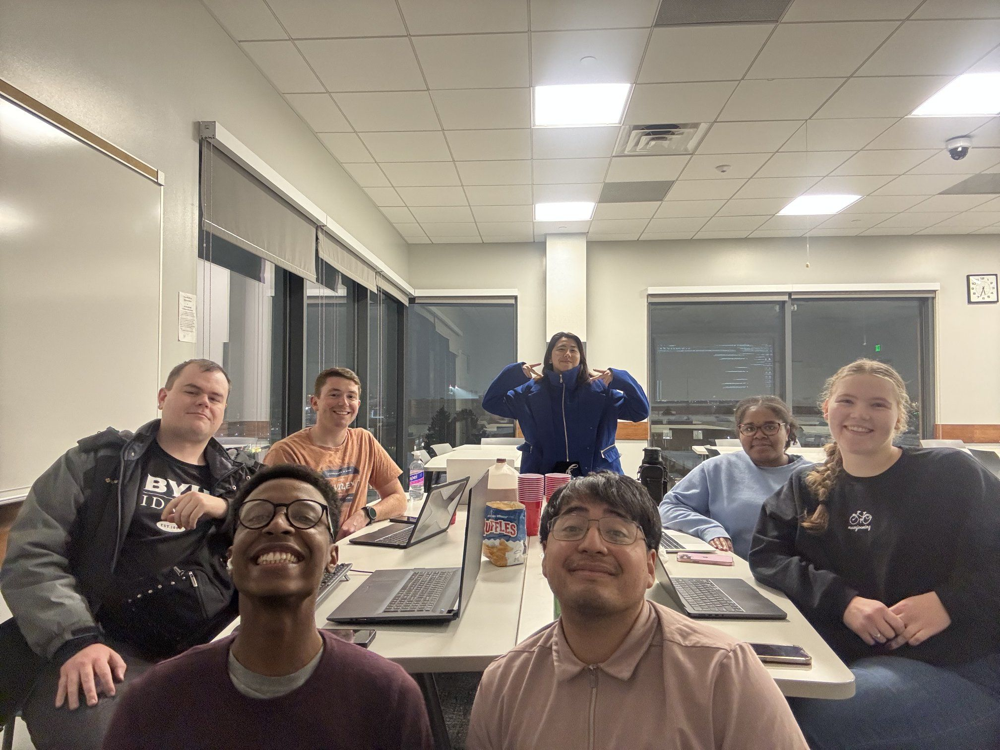

As a member of Cloud Society, I participated in weekly hands-on labs focused on AWS. These labs helped me understand how cloud systems work, including deploying services, managing resources, and exploring how applications run in the cloud. Working alongside others made the experience more collaborative and allowed me to learn through shared problem solving. Overall, it gave me a stronger foundation in cloud computing and how it’s applied in real-world environments.
